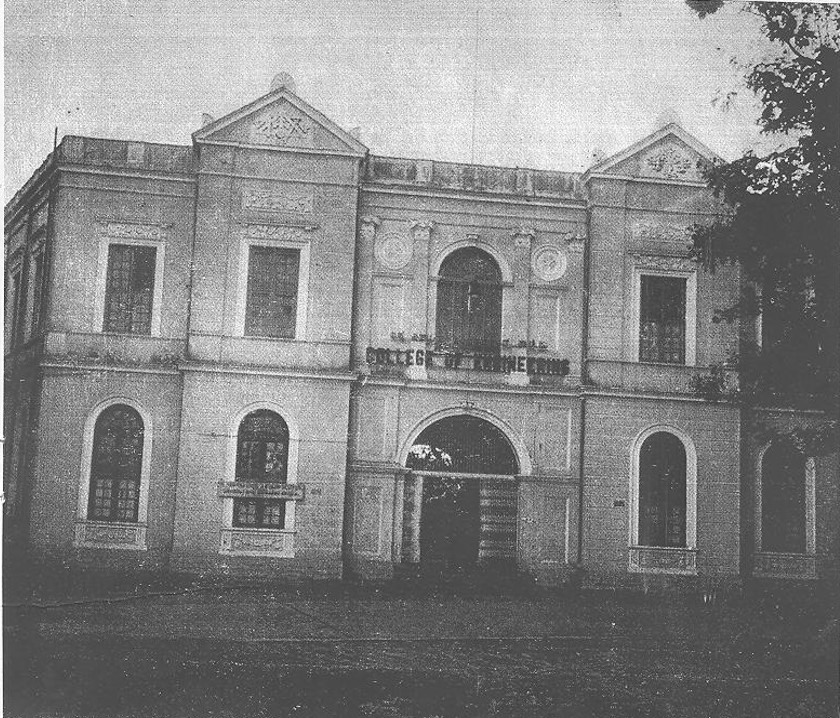

How it All Began
In the early 20th century, Sir M. Visvesvaraya had a vision of creating world-class engineers. In 1917, as the Diwan of Mysore, he established the University Visvesvaraya College of Engineering (UVCE) to train engineers in India. The college began with civil engineering courses and has grown into one of India's most prestigious institutions.
Fun Facts About UVCE
-
UVCE - A Symbol of the Golden Era of Bengaluru
UVCE was integral in developing Bengaluru during its golden era, producing engineers who shaped the city's identity as the "Silicon Valley of India."
-
Pioneered by the Magnificent Trio
The college was brought to life by the efforts of Maharaja Krishnaraja Wadiyar IV, Sir M. Visvesvaraya, and Sir Mirza Ismail, creating a hub for technical education and innovation.
-
The Oldest Book in the City
The Library has an impressive collection of over 1.55 Lakhs Books (91,000 Titles, and 64,000 volumes) and Journals covering various branches of Engineering.The first book that was registered here is "Strength of materials" written by Arthur Morley bought for rupees 20 from london.
-
Noise Cancellation Among the Crowd
Despite being in the heart of Bengaluru, UVCE offers a calm environment where students can escape the city’s rush and focus on their studies.
-
More Capable Students
UVCE students have earned their place through hard work and resilience, developing the skills to excel in their fields with the support of a strong alumni network.